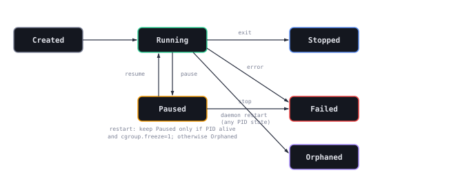

State Persistence Model
How DaemonState records and reconciles containers across daemon restarts.
Overview
DaemonState lives in crates/minibox/src/daemon/state.rs and is shared through Arc<RwLock<...>>. Every add, remove, state transition, and PID assignment triggers best-effort persistence. Writes use a sibling temporary file, mode 0o600 on POSIX, and atomic rename.
What Survives a Restart
| Data | Survives? | Notes |
|---|---|---|
| Container records and persisted state | Yes | Loaded from state.json, then reconciled |
| Host PID | Conditional | Read for immediate reconciliation, then daemon PID tracking is cleared |
| Overlay mount | No | The active mount is not recreated |
| Cgroup attachment | No | Directories may remain, but state is not reattached |
| Bridge IP allocation | No | The allocation map is in memory only |
State File
| Context | Path |
|---|---|
| Explicit override | $MINIBOX_DATA_DIR/state.json |
| Linux root | /var/lib/minibox/state.json |
| Linux non-root | ~/.minibox/cache/state.json |
| macOS | ~/Library/Application Support/minibox/state.json, with /tmp fallback in sandboxed/CI environments |
- Serialize the container map as formatted JSON.
- Write
state.json.tmp. - Set mode
0o600on POSIX. - Rename it atomically to
state.json.
Failures are warned and do not crash the daemon.
Startup Reconciliation
| Persisted state | Condition | Reloaded state |
|---|---|---|
Created | Any | Stopped |
Running | Any PID state, including alive | Orphaned |
Paused | PID alive and cgroup.freeze=1 | Paused |
Paused | Otherwise | Orphaned |
Stopped, Failed, or Orphaned | Any | Unchanged |
A surviving Running process is still orphaned because the restarted daemon has no reaper attached. Paused is the only non-terminal state that may be retained, and only when both process liveness and freezer state are confirmed.
Container State Machine
Six states, and the CLI distinguishes all six. Four are the lifecycle; Failed and Orphaned are outcomes of it, marked below with a hatched rule rather than a colour of their own.
Exists, nothing running. The state a container is in between create and its first successful start.
The only live state. pause suspends execution without losing the process, and resume returns to it.
Process retained, execution suspended. Survives a restart, and resumes into the same process where the platform allows it.
A deliberate end, not a failure. Reached through stop or a clean exit, and startable again.
An error during execution or startup. Terminal until the failure is cleared.
Found by startup reconciliation: persisted state existed but the PID did not. Not reattached.

Persistence Port
pub trait StateRepository: Send + Sync + 'static {
fn load_containers(&self) -> Result<HashMap<String, ContainerRecord>>;
fn save_containers(&self, containers: &HashMap<String, ContainerRecord>) -> Result<()>;
}JsonFileRepository is the production adapter. Tests use in-memory doubles or temporary directories. Both repository injection and the production raw-path constructor coexist by design.
Not Reattached
- Running processes and their reapers.
- Bridge allocations, veth pairs, and iptables rules.
- Active overlay mounts, though layer and upper directories remain on disk.